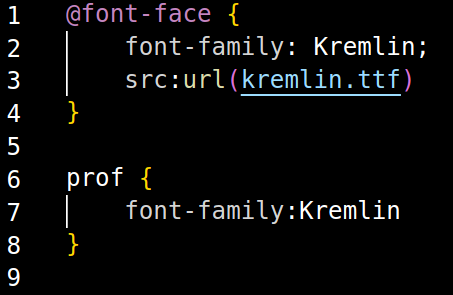

Agora sim, podemos respirar direito. Então, quais são as dúvidas?
Por que você diminuiu? E por que eu estou em um lugar diferente? O que aconteceu?
Hahaha. Nós estamos em uma página com estilo diferente. Lembra quando você
escolheu sua cor? Algo semelhante está acontecendo aqui. Alterando as propriedades CSS, conseguimos nos
expressar de formas diferentes.
O que eu sou?
Você é um elemento. Mais especificamente, uma tag html. Um conjunto de propriedades e valores. Com
potencial para se tornar o que quiser!
Não faz sentido. Onde nós estamos? Quem é você?
Nós estamos em uma página web, em um navegador, em um computador. E eu sou seu professor! Minha função é
te ajudar a alcançar seu potencial... Por agora, por que não vamos para a próxima lição? Só se aprende
fazendo!
[Segunda Lição: Por que não tenta alterar sua
fonte?] Também é simples, veja:

Ola camarada...
Interessante. Me sinto... sofisticado.
Haha. Como pode ver, também podemos alterar o tamanho da fonte. Tente!
HAHAHAH. Eu realmente posso ser o que
quiser!
É só o começo. A próxima lição será ainda mais impressionante.
- Continue -